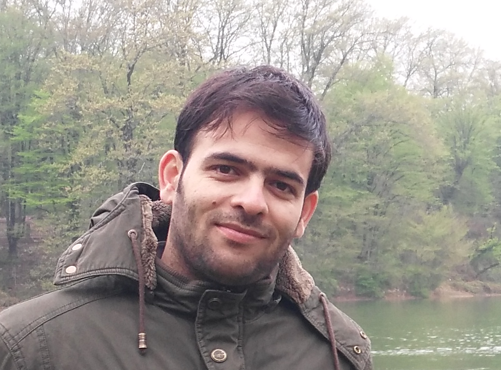

 University of Tehran · Tehran, Iran Abbas ZohrevandPh.D. Candidate in Artificial Intelligence I study machine learning and probabilistic methods for sequence analysis, with a foundation in computer vision, document analysis, and biometrics. ResearchMy current research centers on probabilistic and generative models for time-series analysis. I am also interested in optimization theory and the geometry of manifolds as tools for building more principled learning methods. AboutI am a Ph.D. candidate at the School of Electrical and Computer Engineering, University of Tehran, supervised by Dr. Reshad Hosseini and Prof. Hadi Moradi. My research has spanned handwritten and document analysis, biometrics, remote-sensing image understanding, and deep learning. Alongside research, I have more than eight years of university teaching experience. Education
|